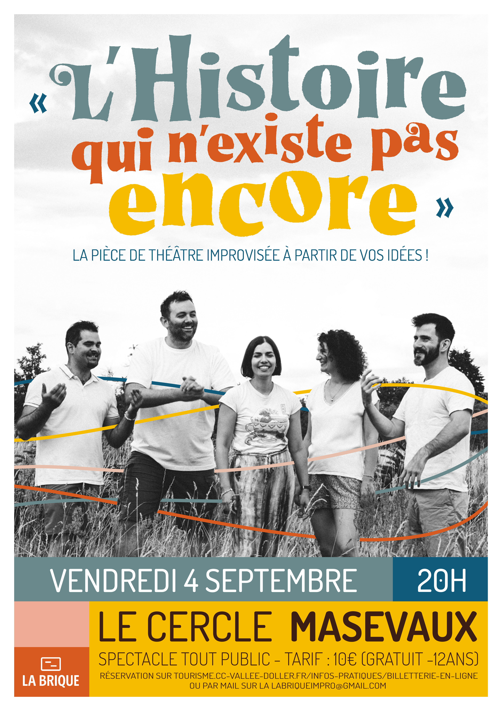

L'Histoire qui n'existe pas encore
Le public choisit les personnages, les lieux et les rebondissements. Les comédiens inventent une pièce entièrement improvisée.
Chaque spectacle est créé en direct grâce aux idées du public. Une soirée unique, drôle et totalement improvisée.
Découvrir nos spectacles
Le public choisit les personnages, les lieux et les rebondissements. Les comédiens inventent une pièce entièrement improvisée.
Un spectacle entre western et mémoire où, chaque soir, se réinvente la légende de Banjo Bill.

Il suffit d'un pas pour changer l'histoire.
La Brique Impro est une compagnie de théâtre d'improvisation basée en Alsace.
Notre objectif est simple : raconter des histoires inédites, faire rire, émouvoir et partager un moment unique avec le public.
Chaque représentation est différente. Chaque soirée est une création originale.